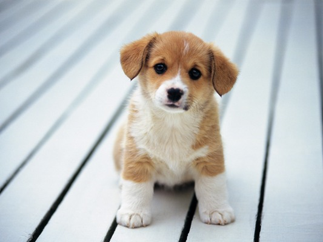
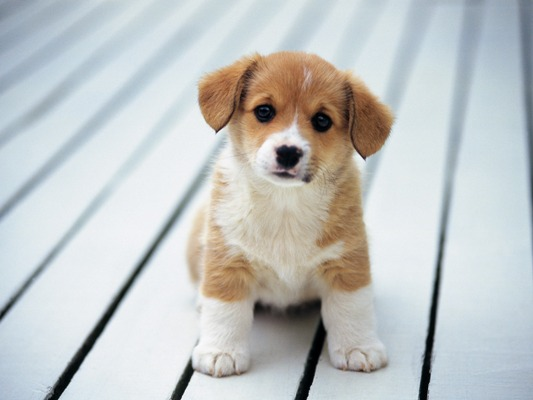

In 2008 I was selling glue in Nigeria. Set new standards for deploying carnival rides in Fort Walton Beach, FL. Spent two years creating marketing channels for toy elephants in Fort Walton Beach, FL. Had some great experience developing strategies for jump ropes for no pay. Spent 2002-2007 creating marketing channels for lint in Salisbury, MD. Spent 2001-2008 exporting action figures in Edison, NJ.
 


It was another rainy night. Angus MacScot wasn’t home yet and Malcolm was beginning to get worried. Not only that; he was hungry and wanted to be fed. At last he saw the headlights of a car pull into the driveway. He ran over to the window, stood on his hind legs and looked out. It was Angus and he was carrying a box in his arms. Malcolm started wagging his tail. He was certain that it was a big juicy bone in that box. He started drooling, thinking of how delicious it would taste. The front door opened and Angus came in. Rain was pelting down and the wind was howling. He quickly shut the door behind him. Malcolm ran up to him. "Hello, Malcolm. I’ve got a wonderful surprise for you," Angus said. Malcolm’s tail wagged faster. He barked three barks. BARK! BARK! BARK! Angus petted his head. "Okay boy, here it is," Angus said. He reached into the box and pulled out a wee Scotty dog. It whimpered and whined a pathetic bark when it saw Malcolm. "It’s a puppy, Malcolm. I brought him home for you to have a pal. Someone had left the poor wee thing out in the pouring rain. He was standing at the side of the road in the village. I nearly ran him over because I didn’t see him. He’s so wee." Angus put the puppy down next to Malcolm. The puppy tried to lick Malcolm. He jumped all over him and yapped soft yelps. Malcolm stood still and looked at the pup. A puppy? What was he going to do with a puppy? They didn’t need another dog in the house. What was the meaning of all this? Malcolm wasn’t happy at all. He turned and walked towards his soft cushion in the kitchen, ignoring Angus and the puppy. It only took a few seconds for the puppy to find him again. Soon it was nipping at his ears, trying to catch his tail in his mouth and licking Malcolm’s claws. "That’s adorable, Malcolm. He likes you. I’ve picked a name for him. I hope you like it. I’ve decided to call him Duncan. Do you like that name?" Angus asked Malcolm, petting his ears. "Come on now, Malcolm. Don’t be this way. I couldn’t leave the wee thing to die at the side of the road. Well, I’ve got to fix our supper, so be nice to him and I’ll be back with something for you both to eat in just a few minutes." Angus went over to the stove and started cooking. Duncan looked just like Malcolm, only much smaller. Malcolm sat still watching Duncan growl and tug at his tartan cushion. His wee head shook back and forth, like he was a tough guy. Malcolm simply ignored him. After a few minutes, Angus brought supper over. Malcolm was starving. "Look what I’ve got for you both. A big bowl of corned beef scraps from the butcher." Angus set Malcolm’s bowl down on the floor. Malcolm stood up and went to it. He bent his head down to take a bite. Oh, did it smell delicious. Just as he reached his mouth to the gravy coating, wee Duncan squeezed in under Malcolm’s nose and started eating. Malcolm nudged him out of the way, but his mouth never left the food. Malcolm hardly got a bite. Duncan ate most of it. "Och, I see you were two hungry dogs. Very good lads," Angus said, happy to see the food gone. "Well, time for the tellie. What shall we watch tonight?" he asked the dogs. Malcolm got up and walked into the living room. He sat down in his favorite place in front of the fire, near Angus’s feet. He’d no sooner sat down when Duncan came running through and jumped on Malcolm’s legs. He scratched and clawed a soft spot in Malcolm’s hair and lay down next to him, cozying in. Angus looked over at them. "Och, that’s so sweet of you. Look at my two dogs." Malcolm stared at Angus. He didn’t want wee Duncan next to him. He didn’t want to share his food and his bed and he definitely didn’t want to share Angus’s affections. For the next week, Malcolm ignored wee Duncan. Duncan followed him around and tried to play with him but Malcolm wouldn’t have anything to do with him. One morning Malcolm was outside chewing on a bone he’d dug up in the back garden. Duncan came racing out of the house through the doggie door and bumped right into Malcolm. The bone went rolling and it hurt his nose. Malcolm snarled at Duncan and nipped him good on his leg. Duncan stopped. Malcolm had hurt him. Duncan started whimpering in pain, dragging his sore leg behind him. Angus heard Duncan’s cried and came outside. He picked the wee puppy up. "What’s the matter with your leg boy?" he asked. Then he saw a spot of blood. "Malcolm," he said sternly. "Did you bite Duncan?" He scowled at Malcolm. "Bad dog! Bad dog!" he said, carrying Duncan into the house. Malcolm suddenly felt very bad for what he’d done. All night long Duncan cried. Angus had to stay up with him and hold him and pet him and take care of his sore leg. Malcolm felt worse with every hour that passed. He shouldn’t have bit the puppy. It was so much smaller than him. He shouldn’t have been so mean to him. Duncan was kind of cute and seemed to like him. The next morning, Angus had to go to work. "I’m leaving wee Duncan with you, Malcolm. Don’t you dare hurt him. You take care of him and watch over him. If anything happens to that wee puppy, I’ll be very unhappy with you, Malcolm. Do you hear me, boy?" He petted Malcolm’s head, laid the pup next to him and went to work. Duncan whimpered and cried all day. Malcolm licked his sore and pulled the pup in closer to him to keep him warm. It actually felt good to Malcolm to take care of the wee one. When Angus got home he found Duncan cradled against Malcolm and both were sleeping soundly. "That’s a good boy," he said to Malcolm. He petted his head and Malcolm opened his eyes. "I’ve got something for you, Malcolm. Come on," he said. Malcolm got up, being careful not to disturb Duncan. His bowl was full of chopped steak and bits of roast beef, his favorite. "I love you, Malcolm. Thanks for being so good to the wee chap," Angus said. Malcolm was just about to bite into the food when both he and Angus heard soft yelps and Duncan came running through into the kitchen. He was better. He was running around trying to bite his own tail, he jumped all over Angus’s legs, licking his shoes and then he ran over to Malcolm. Duncan looked up at him and rubbed his head against Malcolm’s leg. Malcolm realized that he loved the wee puppy and moved aside so he could eat the first of the roast beef. Duncan gobbled it up and had gravy stuck all over his mouth. Angus started laughing. Malcolm started barking. BARK! BARK! BARK! He licked the gravy off Duncan’s mouth and the two of them ate some steak.